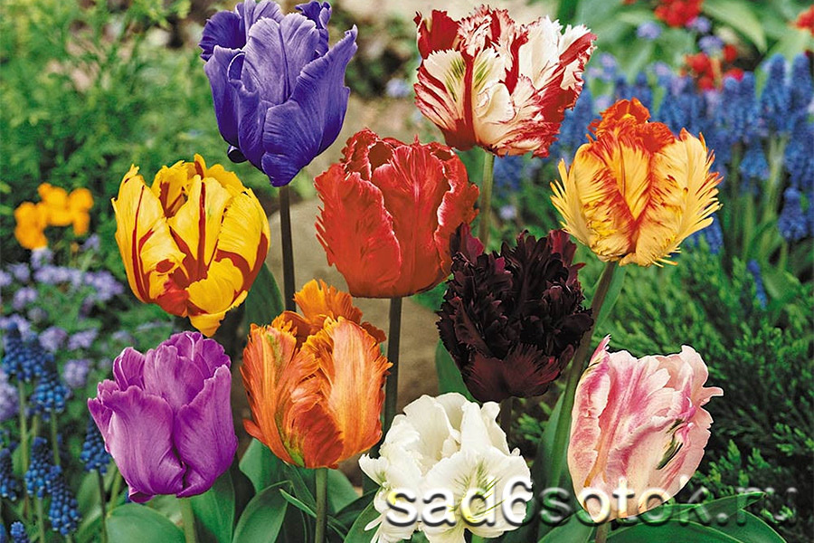
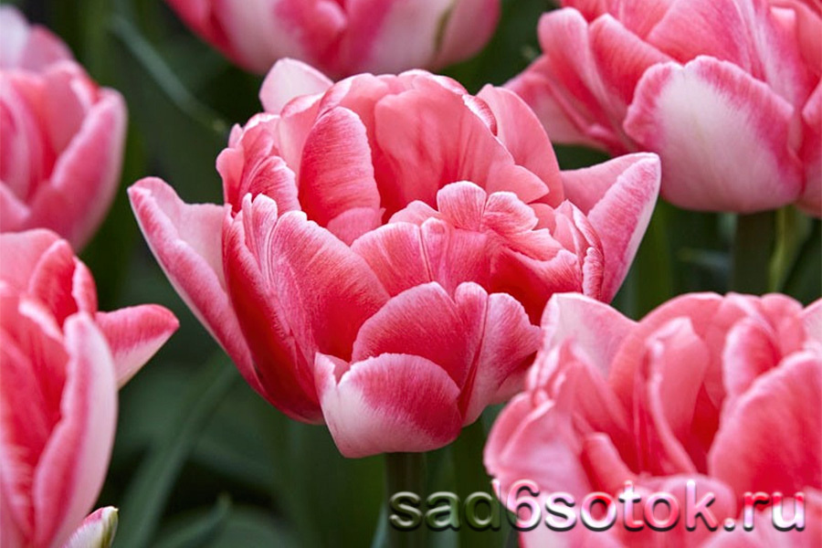
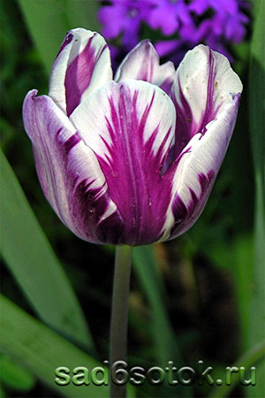
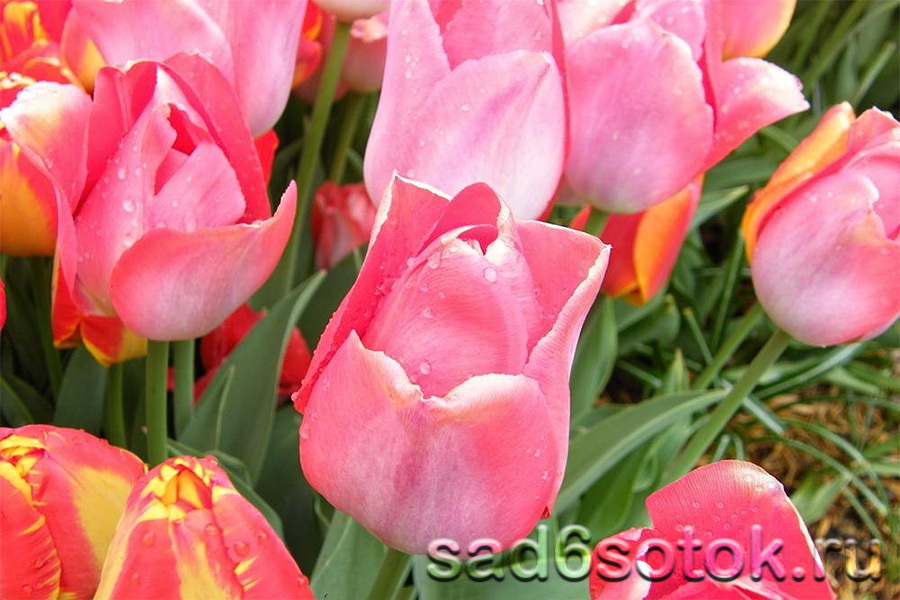
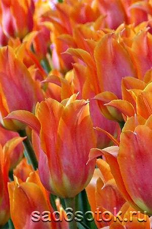

Здравствуйте, это моя первая страница.
Добро пожаловать! :)

Фокстрот (Foxtrot). Стройные цветоносы изящно несут полные махровые цветки чашевидной
формы, высотой до 9 см и диаметром около 7 см. Кремово-розовые тугие лепестки украшены красной
штрихованной окантовкой, плавно переходящей в основной цвет. Длина стеблей до 40 см, цветение
начинается в первой декаде мая. Фокстрот замечательно выглядит на клумбах и дает роскошную выгонку.

Зурел (Zurel) .Восхитительный тюльпан темно-бордового, позже яркого свекольного
тона, украшен кипенно-белыми перьями. Бокалы высотой до 7 см раскрываются в конце апреля.

Биг Чиф (Big Chief).Крепкое растение с устойчивыми цветоносами вырастает выше
полуметра, цветет в мае ‒ начале июня. Ровный бокал высотой 10–12 см не склонен широко
раскрываться. Лепестки кремовые или розоватые с малиново-красной спинкой, внутренняя поверхность
алая. Донце округлое, желтого цвета с черными пыльниками тычинок.

Перестройка (Perestroyka).
Популярнейшая новинка, которую невозможно обойти стороной. Бокалы строгие, ровные, высотой до 12
см с тугими лепестками густого оранжевого цвета, со временем меняют окраску к насыщенному
лососевому тону, широко не раскрываются, держатся 10–14 дней. Растения мощные, стебли достигают
одного метра.

посмотреть подробную информацию